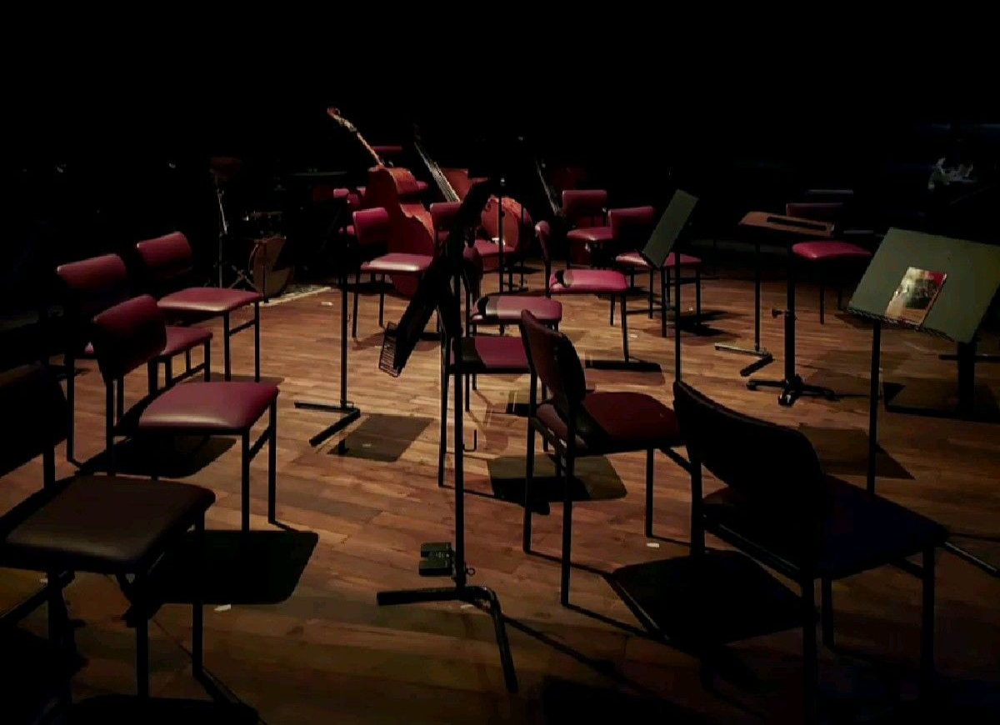

공연 일정
10월부터 12월까지 공연 24회의 곡목과 값입니다.

고르기
24회
-
10월 14일(수) 19:30 · 실내악
희담 현악 4중주 정기 연주 3
- 현악 4중주
- 희담 현악 4중주
R 50,000원 · S 40,000원 · A 25,000원 · 남은 자리 18 %
-
10월 16일(금) 19:30 · 독주
윤가람 피아노 독주회
- 피아노
- 윤가람
R 45,000원 · S 35,000원 · A 20,000원 · 남은 자리 36 %
-
10월 17일(토) 17:00 · 고음악
프랑스 궁정의 춤곡
- 합주
- 늦울림 고음악 합주단
- 하프시코드
- 서이담
R 40,000원 · S 30,000원 · A 20,000원 · 남은 자리 29 %
-
10월 18일(일) 15:00 · 성악
한소리 가곡의 오후
- 소프라노
- 한소리
- 피아노
- 문채원
R 40,000원 · S 30,000원 · A 20,000원 · 남은 자리 42 %
-
10월 21일(수) 19:30 · 현대
빈의 세 사람
- 앙상블
- 앙상블 결
- 지휘
- 남궁도윤
R 35,000원 · S 25,000원 · A 15,000원 · 남은 자리 61 %
-
10월 24일(토) 17:00 · 실내악
솔기 트리오 · 피아노 3중주의 밤
- 피아노 3중주
- 솔기 트리오
R 50,000원 · S 40,000원 · A 25,000원 · 남은 자리 10 %
-
10월 28일(수) 19:30 · 독주
권하율 무반주 첼로
- 첼로
- 권하율
R 45,000원 · S 35,000원 · A 20,000원 · 남은 자리 23 %
-
10월 31일(토) 17:00 · 실내악
목관 5중주 · 바람의 방
- 목관 5중주
- 희담 목관 5중주
R 40,000원 · S 30,000원 · A 20,000원 · 남은 자리 53 %
-
11월 4일(수) 19:30 · 고음악
바이올린과 통주저음
- 바로크 바이올린
- 정새벽
- 하프시코드
- 서이담
- 바로크 첼로
- 류하늘
R 40,000원 · S 30,000원 · A 20,000원 · 남은 자리 38 %
-
11월 7일(토) 17:00 · 실내악
희담 현악 4중주 정기 연주 4
- 현악 4중주
- 희담 현악 4중주
- 비올라
- 차은재
R 50,000원 · S 40,000원 · A 25,000원 · 남은 자리 14 %
-
11월 8일(일) 15:00 · 독주
오도현 기타 독주회
- 기타
- 오도현
R 35,000원 · S 25,000원 · A 15,000원 · 남은 자리 45 %
-
11월 13일(금) 19:30 · 성악
겨울 나그네
- 바리톤
- 백은호
- 피아노
- 문채원
R 50,000원 · S 40,000원 · A 25,000원 · 남은 자리 7 %
-
11월 15일(일) 15:00 · 실내악
어린이와 함께 듣는 현악 4중주
- 현악 4중주
- 희담 현악 4중주
- 해설
- 남궁도윤
전석 20,000원 · 남은 자리 32 %
-
11월 20일(금) 19:30 · 현대
버르토크 4중주 전곡 1
- 현악 4중주
- 앙상블 결 4중주
R 35,000원 · S 25,000원 · A 15,000원 · 남은 자리 56 %
-
11월 21일(토) 17:00 · 현대
버르토크 4중주 전곡 2
- 현악 4중주
- 앙상블 결 4중주
R 35,000원 · S 25,000원 · A 15,000원 · 남은 자리 59 %
-
11월 27일(금) 19:30 · 독주
이수안 바이올린 리사이틀
- 바이올린
- 이수안
- 피아노
- 윤가람
R 50,000원 · S 40,000원 · A 25,000원 · 남은 자리 20 %
-
11월 29일(일) 15:00 · 고음악
퍼셀의 노래
- 카운터테너
- 김온유
- 합주
- 늦울림 고음악 합주단
R 40,000원 · S 30,000원 · A 20,000원 · 남은 자리 43 %
-
12월 2일(수) 19:30 · 실내악
클라리넷 5중주 둘
- 클라리넷
- 하진우
- 현악 4중주
- 희담 현악 4중주
R 50,000원 · S 40,000원 · A 25,000원 · 남은 자리 26 %
-
12월 5일(토) 17:00 · 독주
쇼팽 녹턴 전곡
- 피아노
- 장서윤
R 45,000원 · S 35,000원 · A 20,000원 · 남은 자리 12 %
-
12월 11일(금) 19:30 · 성악
합창 · 겨울의 성가
- 합창
- 희담 실내합창단(40)
- 지휘
- 남궁도윤
- 피아노
- 문채원
R 40,000원 · S 30,000원 · A 20,000원 · 남은 자리 34 %
-
12월 13일(일) 15:00 · 고음악
바흐 · 음악의 헌정
- 합주
- 늦울림 고음악 합주단
- 바로크 플루트
- 조하린
R 40,000원 · S 30,000원 · A 20,000원 · 남은 자리 40 %
-
12월 18일(금) 19:30 · 실내악
송년 실내악 1 · 슈베르트 5중주
- 첼로
- 권하율
- 현악 4중주
- 희담 현악 4중주
R 55,000원 · S 45,000원 · A 30,000원 · 남은 자리 5 %
-
12월 19일(토) 17:00 · 실내악
송년 실내악 2 · 송어
- 피아노
- 윤가람
- 더블베이스
- 임태오
- 현악
- 희담 현악 4중주 단원 셋
R 55,000원 · S 45,000원 · A 30,000원 · 남은 자리 9 %
-
12월 20일(일) 15:00 · 성악
헨델 메시아 발췌
- 합창
- 희담 실내합창단(40)
- 합주
- 늦울림 고음악 합주단
- 지휘
- 남궁도윤
R 55,000원 · S 45,000원 · A 30,000원 · 남은 자리 3 %
고른 조건에 맞는 공연이 없다.